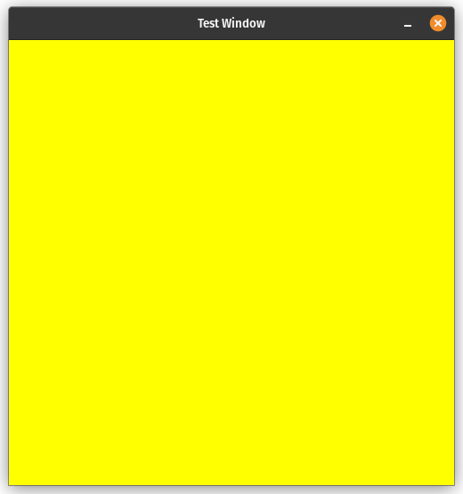
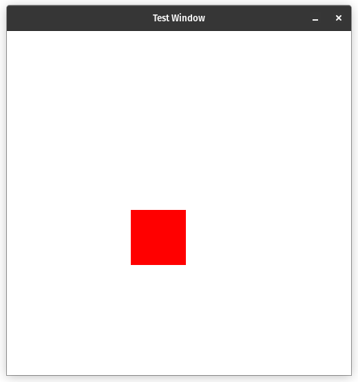

|
DrawCaml
|
|
DrawCaml
|
DrawCaml is an OCaml library on top of C++ X11. It is compiled using Opam. The dependencies are:
opam install dune dune-configurator)Once you got all dependencies, you can clone this repository
git clone https://github.com/Drawcaml/drawcaml.git
You can then run an example code with
cd; dune exec snake.exe for example
If everything worked, you should see a window getting opened.
Like many graphical libraries, DrawCaml uses a container paradigm. To see all the containers, there is the full documentation available here
Here is a very short example, that simply creates a window of size 500 by 500, and puts it's background color to yellow.

Here we see that the window has a main container, that itself can have childs. Changing the color of this container changes the color of the whole window. The call to window#waitForClose() simply tells the library that we want to still have the window open after the program ended, until the user decides to close it.
We can now try to add some simple containers inside of the window:

Here, we used the same base code as the first example, but we added a grid container as child of the main container. A grid container has a simple grid structure, where we can put other containers. To test this, we create a new container with new DrawCaml.dcontainer and add it to the grid container.
DrawCaml adds the possibility to setup an event handler, to handle the keyboard and mouse events from the user.
The event handler takes an object of type event and can match it to perform actions accordingly. Please note that because the event handler relies on multithreading, you have to be careful about the garbage collector. Performing some simple actions shouldn't cause any issues.
Not also the different way of ending the program: using window#notClosed (), we can check whether the user closed the window or not, and use it in a while condition.
For further code example, see the folder /bin/ from the repository, and refer to the DrawCaml documentation here